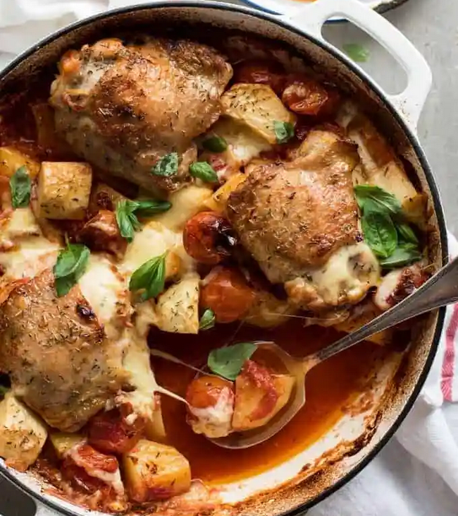

Italian Chicken

Description
Easy, best ever garlic Italian chicken! If desired, serve with plain white rice and a green vegetable such as
broccoli or green beans.
Ingrediants
- 8 chicken legs, halved
- 4 cloves garlic
- 1 tablespoon crushed red pepper flakes
- 1 tablespoon vegetable oil
- salt to taste
- ½ cup water
Steps
-
In a large skillet, brown the chicken pieces in oil and cook for about 15 minutes over medium heat.
-
Crush garlic cloves and squeeze over chicken. Cover skillet and cook over low heat for 10 minutes
each side. Remove cover, sprinkle with red pepper flakes and salt to taste, add water and simmer
over low heat until water evaporates and the chicken pieces are sticky and yummy!